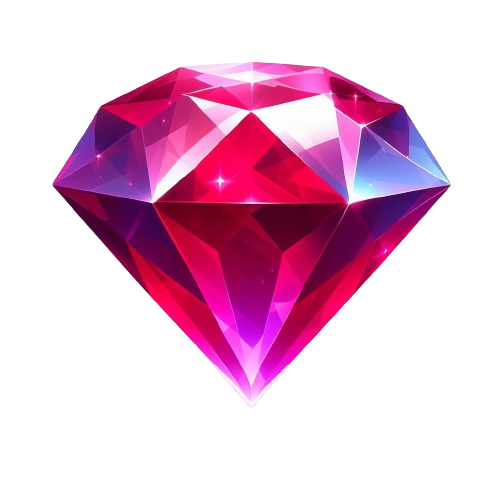

<ion-header>
  <ion-toolbar>
    <div style="display: flex; justify-content: star; align-items: center;">
      <ion-avatar style="width: 50px; height: 50px; margin-left: 0.3rem;">
        
      </ion-avatar>
      <ion-title>{{authSvc.getUserName()}}</ion-title>
    </div>

    
  </ion-toolbar>
</ion-header>

<ion-content>
  <!-- <ion-text>{{authSvc.getUserEmail()}}</ion-text> -->
</ion-content>